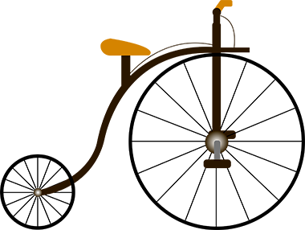

La primera bicicleta fue inventada por el herrero escocés Kirk Patrick Macmillan y fue llamada velocípedo y con esta se celebró la primera carrera.
En 1879 en Suiza se creó una carrera ciclista por etapas, diputada alrededor del lago Leman. El ciclista suizo Henri Suter posee el record de cuatro victorias en esta prueba.
El 13 de mayo de 1909 se realizo el primer giro a Italia en la plaza Di Loreto de Milán, fue organizado por el periódico deportivo “La Gazela dello sport”, que en 1931 adopto el color rosa de sus paginas al igual que
“L´auto”, que identificaba al líder de la carrera.
El dominador del giro fue Carlo Galetti, campeón desde 1910 hasta 1912.
En 1935, Clemente López Doriga con Juan Pujol, director del diario “Informaciones”, organizaron la I vuelta a España, el recorrido consto de 3431 kilómetros y 14 etapas.
Se disputaron cuatro ediciones más hasta 1950, cuando el diario decidió renunciar a organizar la vuelta a España.
En 1979 la empresa Unipublic se hizo a cargo de la vuelta.
El ciclismo apareció en los olímpicos en 1896 en la ciudad de Atenas, con las modalidades de ruta y pista. Solo participaron hombres hasta 1980 en Moscú, en ambas modalidades.
Las mujeres empezaron en la modalidad de ruta en los olímpicos de los Ángeles en 1984 y en pista compitieron en la ciudad de Seúl en 1988.
El ciclismo de montaña apareció en los olímpicos de Atlanta en el año de 1988, con una prueba de campo.
En los juegos de 2008 apareció BMX en la ciudad de Pekín.
Se disputó en 1903; la carrera se interrumpió dos veces por causa de las guerras mundiales.
El primer Tour de Francia comenzó en Montgeron, cerca de París, donde tomaron la salida 60 ciclistas que cubrieron la etapa inaugural de 467 km hasta Lyon.
El colombiano Nairo Quintana ganó el tour de Francia del 2018, con una etapa de 67 Km y 3 puertos de montaña.
El colombiano Rigoberto Urán quedó subcampeón en el tour de Francia del 2017, en su cuarta participación.
En 1950 nace la vuelta a Colombia "Café Pasaje". Efrain Forero "El Zipa" con Enrique Santos Castillo, organizaron esta competición y el campeón fue Forero.
En 1948 se conformó el primer equipo de persecución por el sacerdote Efraín Rozo, el cual se desarrolló en los juegos centro Americanos del Caribe y ganaron la primera medalla de oro de pista para Colombia.
Tuvo sus inicios en los años ochenta, en esta época
llego la bicicleta todo terreno y sus inicios fueron como actividad recreativa en la ciudades de Bogotá, Medellín y Cali.
Cali se destacó por sus montañas, ya que se divisaban todos sus
increíbles paisajes y grandes grupos de personas salían recorrerlas.
En 1975 llego el BMX a Colombia con la representación de Ricardo Arango,
por la influencia de la revista de BMX-Action, en la pista de moto cross de Furesa.
El 20 de junio de 1979 nació la liga Antioqueña de Ciclocross Americano como una entidad sinánimo de lucro y con personería jurídica.
Esteban Chavez es un ciclista de ruta colombiano, profesional desde 2009 y se encuentra en el equipo australiano Mitchelton-Scott. Ha quedado en segundo puesto en el giro a Italia y tercero en la vuelta a España.
Martha Bayona Pineda es una ciclista colombiana de pista.
Ha participado en el campeonato nacional de ciclismo en pista y en los juegos Centroamericanos y del Caribe ganando medalla de bronce.
Jerónimo Bedoya es un colombiano que participó en los juegos Suramericanos juveniles de Chile con la competencia de Mountain Bike.
Mariana Pajón es una ciclista colombiana y ha ganado en dos ocasiones medalla de oro en los olímpicos. Posee la Orden de Boyacá (Condecoración de la república de Colombia).